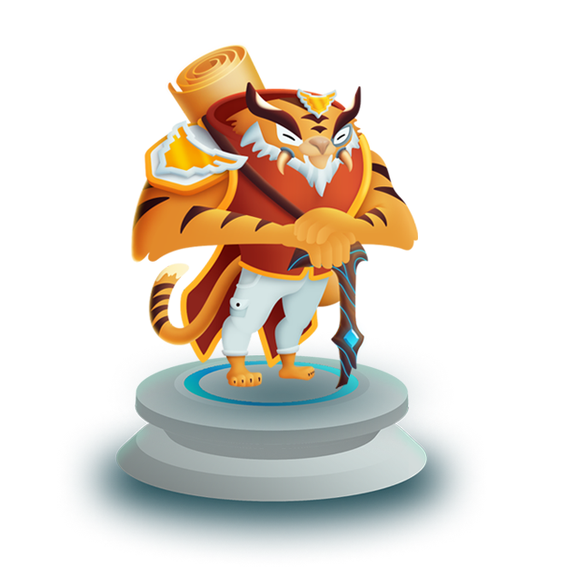
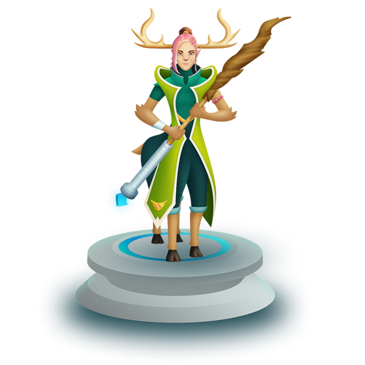
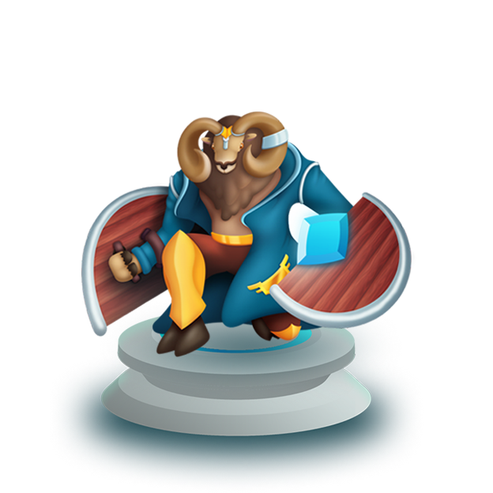
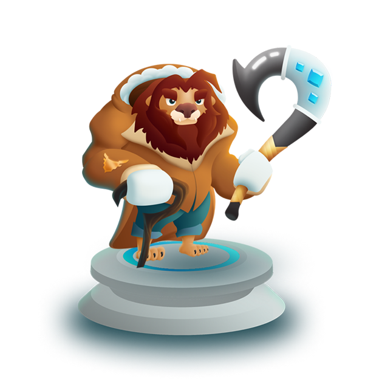
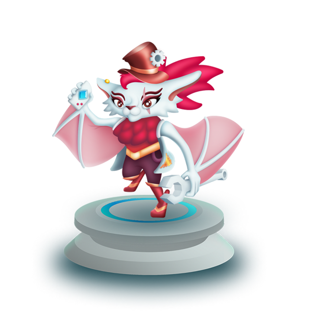
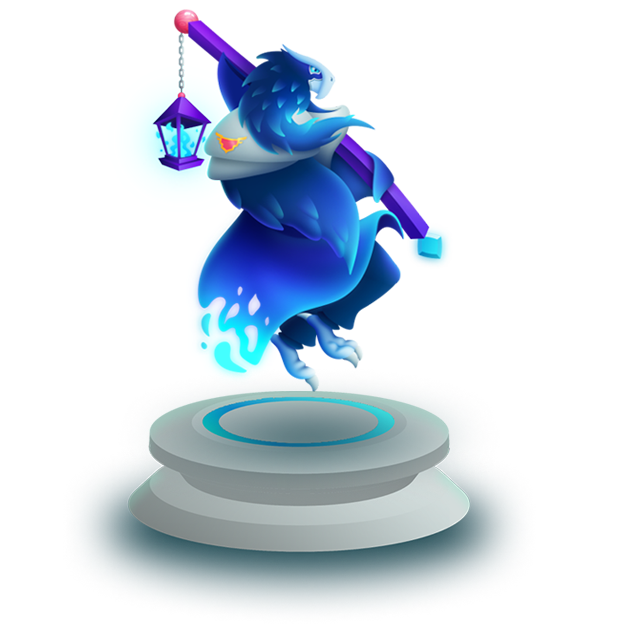

Atticus
Keeper
Atticus is the elder keeper, and holds a strong conviction to the keeping
of history across all time and space. He comes from the ruinous and
sandy village of Istoria, where they have deep roots in the traditions of
Galexium that have been passed down for ages. He is a bold leader and a
faithful trainer to the next generation of keepers.

Margrace
Keeper
Margrace holds the position of keeper in the ancient and wonderous
forests of her village Avoris, full of colorful wildlife, shimmering waters,
and the primeval trees that hold the genetic code to create physical
memories. Protecting the beautiful state of the nature around them is
the number one expectation for all Avorisians. Margrace upholds every
aspect of this value to her core and

Barrin
Keeper
Barrin is the wise and empathetic keeper from the windy foothills and
plains of the village of Skydda. Those from his village hold close
relationships to those they love and an even tighter collective bond to
defending Galexium from any threats. Barrin is well respected by his
peers, while always remaining humble and treating those around him with honor

Tulso
Keeper
Tulso is the representative keeper from the sun kissed mountains that
hold the village of Conkurra. The cliffs of these mountains are home to
some of the strongest, fastest, and slyest competitors in Galexium. Tulso
is no exception. With his prized hook of Conkurra, he shows that even
though he has retired past his prime physique, he still holds the bold,
fierce heart of a warrior.

Mynx
Keeper
Mynx is the small, but spunky keeper from the water powered cities of
Rasvar; where a love for thinking and discovery drive it’s citizens to new
heights in science and technology. She is full of spark and has been
known for using her technical skills to be a troublesome punk. However,
the threatening repurcussions of outside forces tampering with time
drove her to expend tireless energy into protecting the city and planet
she loves.

Serulean
Keeper
Serulean is truly a creative visionary and carries the creative spark for the
nomadic village of Luvoa where imagination, beauty, and passion are on
full display. Full of appreciation for all forms of art and creativity,
Serulean is constantly learning from the creators of the past to find
inspiration and fulfill new creative visions.